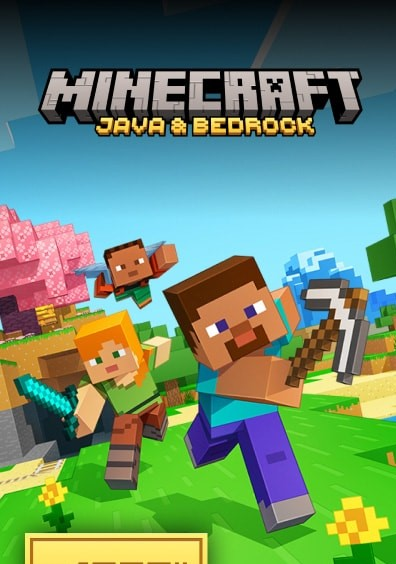

| Home | About | Gallary | Contact |
|  | |||
| Types: | |||
|
|
|||
Informations: |
|||
Game mods in Minecraft are custom additions or changes that enhance the gameplay experience. They can add new items, blocks, mobs, dimensions, or even entirely new mechanics. Mods like OptiFine improve graphics, while others like Tinkers' Construct add complex crafting systems. Minecraft Java Edition supports the most mods, using loaders like Forge or Fabric. Mods are often grouped into modpacks for themed gameplay, such as tech, magic, or survival. Popular platforms like CurseForge host thousands of mods for easy access. Modding lets players customize Minecraft to suit their playstyle. It’s a major reason the game remains so popular. With mods, Minecraft becomes almost limitless.
Minecraft has a few powerful bosses that challenge players beyond regular survival gameplay. The most iconic is the Ender Dragon, found in The End dimension, and often considered the final boss of the game. Another major boss is the Wither, a player-summoned undead creature that shoots explosive skulls and drops a Nether Star when defeated. In Minecraft Legends, the Piglin bosses also serve as threats in strategic battles. Each boss requires preparation, special gear, and strategy. Beating them rewards players with rare items and a huge sense of accomplishment, making boss fights a thrilling part of Minecraft’s adventure.
The enchantment system in Minecraft allows players to add magical effects to their tools, weapons, and armor. Using an enchanting table, players can spend experience levels and lapis lazuli to apply random enchantments. Each item type has specific enchantments—for example, Sharpness for swords, Efficiency for tools, and Protection for armor. More powerful enchantments can be unlocked by surrounding the enchanting table with bookshelves. Players can also combine enchanted items or books using an anvil, and repair gear in the process. Enchantments improve gameplay by boosting durability, damage, speed, and even adding special effects like Fire Aspect or Unbreaking, making them essential for survival and combat.